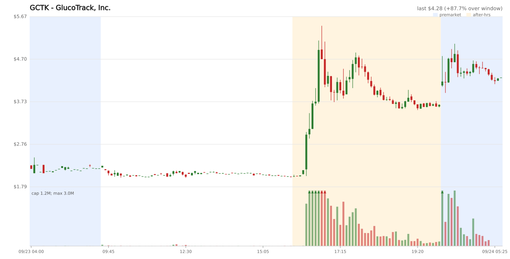
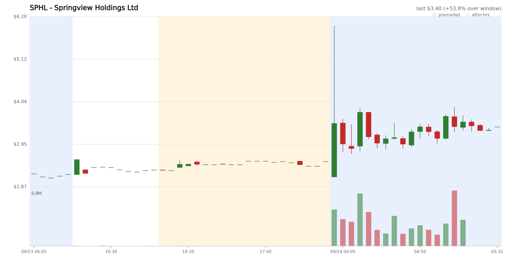
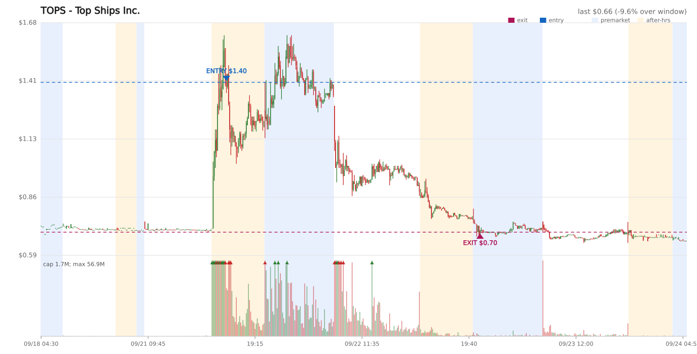

Charts



Daily log
## Position Evaluation — 10:30 CET | Ticker | Entry | Current | P&L % | Peak | Days | Grade | Decision | Reason | |--------|-------|---------|-------|------|------|-------|----------|--------| | TOPS | $1.40 | $0.6989 | -50.1% | $1.62 | 2 | None | SELL | No catalyst; exit at first premarket opportunity. Alpaca mark is far below the -10% hard stop ($1.26). Peak $1.62 is verified by SIP bars. | **Actions taken:** - Submitted extended-hours SELL 64 TOPS at $0.67 limit (order `b732f236`). The Alpaca quote was stale (Sep 22 20:00Z, bid $0.774); the latest SIP bar available at the pulse closed at $0.70 (VWAP $0.71). The order filled immediately at $0.70. - Realized P&L: 64 × ($0.70 − $1.40) = **−$44.80 (−50.0%)**. Alpaca positions now shows no open positions; `OPEN_POSITIONS.md` records the fill under Closed Positions. ## Position Evaluation — 14:30 CET Alpaca reports no open positions. `OPEN_POSITIONS.md` agrees, so there are no current prices, quotes, bars, risk decisions, or sell orders to process. | Ticker | Entry | Current | P&L % | Peak | Days | Grade | Decision | Reason | |--------|-------|---------|-------|------|------|-------|----------|--------| | — | — | — | — | — | — | — | — | No open positions. | **Actions taken:** None. ## Scan 21:30 CET (3:30 PM ET) Scanner session: REGULAR, 2026-09-23 15:30:17 ET; 26 hits. After-hours trading has not opened, so AH price, change, volume, and the supplementary AH-change-only pass are unavailable. All names are **Watch — pending AH confirmation**. No catalyst workups or paper orders were appropriate before an AH appearance. | Ticker | Price | Day% | 5mVol | Avg5m | IRVol | VChg% | Float | Industry | Decision | |--------|-------|------|-------|-------|-------|-------|-------|----------|----------| | GBLRF | $0.71 | +146.4% | 40K | 0 | 32.7 | +8788.9% | 135.3M | Other Metals/Minerals | Watch — pending AH confirmation | | MHUAF | $7.00 | +0.0% | 5K | 631 | 28.7 | +4955.0% | 613K | Medical Specialties | Watch — pending AH confirmation | | CVOSF | $2.70 | -8.8% | 10K | 2K | 16.0 | +9900.0% | 51.1M | Packaged Software | Watch — pending AH confirmation | | TERS | $0.85 | +61.9% | 10K | 7K | 14.2 | -59.1% | 1.7M | Investment Managers | Watch — pending AH confirmation | | GYGY | $0.80 | -3.6% | 12K | 11K | 12.2 | -22.4% | 17K | Packaged Software | Watch — pending AH confirmation | | CRE | $2.92 | -1.0% | 23K | 12K | 10.6 | +6.5% | 1.1M | Commercial Printing/Forms | Watch — pending AH confirmation | | BENF | $2.29 | +325.4% | 400 | 715K | 8.0 | -99.9% | 2.3M | Investment Managers | Watch — pending AH confirmation | | WHLR | $5.27 | +181.9% | 100 | 177K | 130.8 | -99.9% | 568K | Real Estate Investment Trusts | Watch — pending AH confirmation | | ARTL | $7.30 | +75.9% | 128 | 219K | 264.3 | -99.9% | 547K | Pharmaceuticals: Major | Watch — pending AH confirmation | | BFRG | $0.99 | +64.7% | 1K | 2.7M | 29.1 | -100.0% | 16.2M | Packaged Software | Watch — pending AH confirmation | | ONCO | $0.98 | +43.5% | 138 | 694K | 37.1 | -100.0% | 4.4M | Pharmaceuticals: Major | Watch — pending AH confirmation | | IPDN | $5.41 | +38.7% | 220 | 19K | 6.6 | -96.9% | 476K | Commercial Printing/Forms | Watch — pending AH confirmation | | MSS | $2.16 | +38.5% | 200 | 61K | 461.2 | -99.3% | 524K | Food Retail | Watch — pending AH confirmation | | NCPL | $1.22 | +25.8% | 616 | 34K | 0.6 | -99.1% | 4.4M | Miscellaneous Commercial Services | Watch — pending AH confirmation | | DCOY | $3.87 | +24.8% | 100 | 32K | 1.6 | -99.6% | 571K | Biotechnology | Watch — pending AH confirmation | | SMJF | $1.54 | +24.2% | 4K | 9K | 7.2 | +44.6% | 2.7M | Building Products | Watch — pending AH confirmation | | HCTI | $1.07 | +23.2% | 250 | 81K | 607.2 | -99.4% | 14.9M | Information Technology Services | Watch — pending AH confirmation | | REBN | $1.11 | +18.8% | 1K | 1K | 1.8 | -8.3% | 6.0M | Restaurants | Watch — pending AH confirmation | | TNMG | $4.64 | +18.7% | 833 | 5K | 1.9 | -74.1% | 589K | Internet Software/Services | Watch — pending AH confirmation | | SRFM | $0.91 | +18.2% | 186K | 97K | 2.5 | +83.1% | 99.4M | Airlines | Watch — pending AH confirmation | | HKIT | $2.90 | +17.7% | 8K | 4K | 3.0 | -51.6% | 796K | Packaged Software | Watch — pending AH confirmation | | KOSS | $4.09 | +17.0% | 100 | 15K | 18.3 | -99.8% | 5.4M | Electronics/Appliances | Watch — pending AH confirmation | | APUS | $2.16 | +16.8% | 3K | 3K | 1.6 | -58.9% | 563K | Biotechnology | Watch — pending AH confirmation | | DBGI | $5.50 | +16.7% | 5K | 5K | 0.1 | +11.8% | 916K | Apparel/Footwear | Watch — pending AH confirmation | | TLSA | $1.03 | +15.7% | 300 | 12K | 2.9 | -89.0% | 65.4M | Pharmaceuticals: Major | Watch — pending AH confirmation | | ZKIN | $1.67 | +15.2% | 100 | 2K | 38.3 | +0.0% | 68.4M | Industrial Machinery | Watch — pending AH confirmation | ## Scan 22:05 CET (4:05 PM ET) Scanner session: AFTERHOURS, 2026-09-23 16:05:25 ET; 0 hits. No candidates found. The 21:30 CET regular-session watch names did not reappear in this after-hours scan. Observation-only scan; no paper orders placed. Supplementary AH-change-only (>15%, not in volume pass): none ## Scan 22:10 CET (4:10 PM ET) Scanner session: AFTERHOURS, 2026-09-23 16:10:18 ET; 0 hits. No candidates found. Observation-only scan before the 23:00 CET entry window; no paper orders placed. Supplementary AH-change-only (>15%, not in volume pass): none ## Scan 22:15 CET (4:15 PM ET) Scanner session: AFTERHOURS, 2026-09-23 16:15:25 ET; 0 hits. No candidates found. Observation-only before the 23:00 CET learning-phase entry window; no paper trades or orders placed. Supplementary AH-change-only (>15%, not in volume pass): none ## Scan 22:20 CET (4:20 PM ET) Scanner session: AFTERHOURS, 2026-09-23 16:20:17 ET; 5 hits. This is observation-only: the learning-phase entry window starts at 23:00 CET. No orders placed. | Ticker | Chart | Close | Day% | AH Chg | AH Price | Total% | AH Vol | AvgVol | VRatio | Float | Industry | |--------|-------|-------|------|--------|----------|--------|--------|--------|--------|-------|----------| | IMCC | [TV](https://www.tradingview.com/chart/?symbol=IMCC) | $2.91 | -29.7% | +16.8% | $3.40 | -17.9% | 535K | 16.1M | 0.0x | 546K | Agricultural Commodities/Milling | | WHLR | [TV](https://www.tradingview.com/chart/?symbol=WHLR) | $5.44 | +190.9% | +12.9% | $6.14 | +228.3% | 300K | 10.5M | 0.0x | 568K | Real Estate Investment Trusts | | CLDI | [TV](https://www.tradingview.com/chart/?symbol=CLDI) | $1.09 | -1.8% | +26.6% | $1.38 | +24.3% | 235K | 77K | 3.0x | 2.6M | Biotechnology | | NCPL | [TV](https://www.tradingview.com/chart/?symbol=NCPL) | $1.04 | +7.2% | +12.5% | $1.17 | +20.6% | 94K | 28.8M | 0.0x | 4.4M | Miscellaneous Commercial Services | | FLNA | [TV](https://www.tradingview.com/chart/?symbol=FLNA) | $0.87 | -15.5% | +5.6% | $0.92 | -10.8% | 65K | 10.2M | 0.0x | 47.3M | Biotechnology | Supplementary AH-change-only (>15%, not in volume pass): none **Candidate checks and decisions:** **First-bar-spike monitoring:** Current AH highs for IMCC ($3.78), WHLR ($6.57), and CLDI ($1.52) were printed by 16:05 ET, inside the 16:00–16:15 ET first-bar window; each current CONFIRM-3 verdict is NO. This is the first qualifying instrumented scan, so persistence across later scans is not established. If NO persists, skip live entry and record FIRST-BAR-SPIKE WATCH with the hypothetical price and scan time. - **IMCC — observe; no entry before 23:00 CET.** Float 546K. Structured search found two current-date releases: a non-binding agreement to acquire 51% of Space Defense Innovations at 07:30 ET, and pricing of a $1.31M registered direct offering at 08:37 ET (dilutive, Grade D). Day% is -29.7%, so the live entry is blocked by the dead-cat rule. AH price is above the regular close on this first qualifying AH scan; only flag DEAD-CAT-OVERRIDE WATCH if AH% continues rising across a second AH scan. 16:20ET SIP bars end at 16:05ET: 16:00 bar 649,003 shares / 5,630 trades, VWAP $3.43; 16:05 bar 506,794 / 4,731, VWAP $3.36. Real activity and price corroboration; volume eased on bar two. Broker tradable=true. - SPIKE 16:02ET +29% $3.76 1976 trades / 259k sh (first co-spike bar) (as-of 16:20ET) - CONFIRM-3 NO no local-volume new-high ignition as-of 16:20ET - **WHLR — observe; no entry before 23:00 CET.** Float 568K. No verified fresh catalyst found for Sep 23; search surfaced the 1-for-9 reverse split effective Sep 22, which is prior-day background, not a fresh catalyst. Total% +228.3% is above the +150% entry ceiling; the ceiling-override conditions are not established (AH peak is currently before 17:00 ET and there is only one qualifying AH scan). SIP through 16:05ET shows 385,609 shares / 4,299 trades at 16:00 and 814,074 / 9,867 at 16:05; VWAPs $5.82 and $6.17. Real volume is accumulating. Broker tradable=true. This ticker was on the 21:30 CET regular-session watchlist. - SPIKE 16:05ET +18% $6.40 2370 trades / 195k sh (first co-spike bar) (as-of 16:20ET) - CONFIRM-3 NO no local-volume new-high ignition as-of 16:20ET - **CLDI — observe; no entry before 23:00 CET.** Float 2.6M; Day% -1.8%; no same-day earnings, press release, or 8-K found in four targeted searches. Sep 17 offering and earlier pipeline updates are background, not fresh catalysts; no catalyst is a concern, not a learning-phase skip reason. SIP through 16:05ET confirms accumulating real volume: 260,427 shares / 1,287 trades at 16:00 and 1,664,630 / 9,278 at 16:05; VWAPs $1.37 and $1.31. SIP high $1.52 corroborates the scanner's $1.38; last bar is 15 minutes behind this scan, so it is not a bad-print contradiction. Broker tradable=true. - SPIKE 16:03ET +34% $1.46 141 trades / 19k sh (first co-spike bar) (as-of 16:20ET) - CONFIRM-3 NO no local-volume new-high ignition as-of 16:20ET - **NCPL — observe; no entry before 23:00 CET; thin-volume concern.** Float 4.4M. No fresh Sep 23 earnings, press release, or 8-K found in four targeted searches. SIP through 16:05ET shows only 94,782 shares / 90 trades at 16:00 and 65,355 / 143 at 16:05, below the thousands-of-trades / hundreds-of-thousands-of-shares evidence for a real build. Do not treat the rising scanner Total% as a build if later bars remain this thin. Broker tradable=true. This ticker was on the 21:30 CET regular-session watchlist. - NCPL 2026-09-23 NO-SPIKE peak +13% @16:05ET (no bar cleared +15% on a volume co-spike) (as-of 16:20ET) - CONFIRM-3 NO no local-volume new-high ignition as-of 16:20ET - **FLNA — no entry; AH change +5.6%, below the +10% multi-scan entry threshold.** ## Scan 22:25 CET (4:25 PM ET) Scanner session: AFTERHOURS, 2026-09-23 16:25:18 ET; 3 hits. This is observation-only before the 23:00 CET learning-phase entry window. No current candidate clears the strict >10% AH-change threshold, so no catalyst workups, orders, or spike-bar/CONFIRM-3 instrumentation were triggered. No paper trades placed. | Ticker | Chart | Close | Day% | AH Chg | AH Price | Total% | AH Vol | AvgVol | VRatio | Float | Industry | |--------|-------|-------|------|--------|----------|--------|--------|--------|--------|-------|----------| | WHLR | [TV](https://www.tradingview.com/chart/?symbol=WHLR) | $5.44 | +190.9% | +5.5% | $5.74 | +207.0% | 915K | 10.6M | 0.1x | 568K | Real Estate Investment Trusts | | DBGI | [TV](https://www.tradingview.com/chart/?symbol=DBGI) | $5.71 | +21.2% | +10.0% | $6.28 | +33.3% | 279K | 3.5M | 0.1x | 916K | Apparel/Footwear | | NCPL | [TV](https://www.tradingview.com/chart/?symbol=NCPL) | $1.04 | +7.2% | +8.7% | $1.13 | +16.5% | 156K | 28.9M | 0.0x | 4.4M | Miscellaneous Commercial Services | Supplementary AH-change-only (>15%, not in volume pass): none **Candidate changes and decisions:** - **WHLR — observe / no entry.** AH change retreated from +12.9% at 22:20 to +5.5%; scanner AH price fell from $6.14 to $5.74. Total% remains +207.0%, above the +150% entry ceiling, and prior checks found no fresh catalyst. VRatio remains negligible (0.1x). - **DBGI — observe / no entry.** First AH appearance at +10.0%, not above the strict >10% gate; one AH scan cannot satisfy the two-scan requirement. No catalyst workup at this threshold. VRatio is 0.1x. - **NCPL — observe / no entry.** AH change fell from +12.5% at 22:20 to +8.7%, with scanner AH price down from $1.17 to $1.13. Prior SIP check showed thin activity; current VRatio remains negligible (0.0x), so this is not a volume-backed build. ## Scan 22:30 CET (4:30 PM ET) Scanner session: AFTERHOURS, 2026-09-23 16:30:29 ET; 7 hits. Observation-only before the 23:00 CET learning-phase entry window; no orders placed. | Ticker | Chart | Close | Day% | AH Chg | AH Price | Total% | AH Vol | AvgVol | VRatio | Float | Industry | |--------|-------|-------|------|--------|----------|--------|--------|--------|--------|-------|----------| | WHLR | [TV](https://www.tradingview.com/chart/?symbol=WHLR) | $5.44 | +190.9% | +15.5% | $6.28 | +235.9% | 1.3M | 10.6M | 0.1x | 568K | Real Estate Investment Trusts | | DBGI | [TV](https://www.tradingview.com/chart/?symbol=DBGI) | $5.71 | +21.2% | +28.0% | $7.31 | +55.2% | 717K | 3.6M | 0.2x | 916K | Apparel/Footwear | | NCPL | [TV](https://www.tradingview.com/chart/?symbol=NCPL) | $1.04 | +7.2% | +12.9% | $1.17 | +21.0% | 183K | 28.9M | 0.0x | 4.4M | Miscellaneous Commercial Services | | LXEO | [TV](https://www.tradingview.com/chart/?symbol=LXEO) | $3.52 | -13.5% | +7.6% | $3.79 | -7.0% | 128K | 1.4M | 0.1x | 69.1M | Biotechnology | | MSS | [TV](https://www.tradingview.com/chart/?symbol=MSS) | $2.10 | +34.6% | +6.2% | $2.23 | +42.9% | 108K | 9.7M | 0.0x | 524K | Food Retail | | VRME | [TV](https://www.tradingview.com/chart/?symbol=VRME) | $1.15 | +10.6% | +7.0% | $1.23 | +18.3% | 106K | 13.3M | 0.0x | 10.0M | Packaged Software | | WETO | [TV](https://www.tradingview.com/chart/?symbol=WETO) | $1.45 | -12.1% | +5.4% | $1.53 | -7.3% | 54K | 3.6M | 0.0x | 915K | Other Transportation | Supplementary AH-change-only (>15%, not in volume pass): none **Candidate checks and decisions:** - **WHLR — no entry.** AH change was above +10% at 22:20 (+12.9%) and 22:30 (+15.5%), but total extension is +235.9%, above the +150% ceiling. SIP confirms real AH activity: bars from 16:00–16:15 ET traded 385,609–814,074 shares each with 4,299–9,867 trades; the high of $6.70 at 16:15 ET corroborates the scanner price. The high was before 17:00 ET, so the ceiling-override watch does not qualify. Four catalyst searches found no fresh Sep 23 catalyst, so provisional grade is None (a concern, not the skip reason). Wheeler's official IR page dates its Q2 results release Aug 6, 2026 at 4:20 PM EDT; the Sep 22 reverse split is prior-day background. `tradable=true`. The quote re-pull remained timestamped 16:00 ET, so the current AH book is unverified. If still above +150% at 23:00, skip under the extension ceiling. - WHLR 2026-09-23 SPIKE 16:05ET +18% $6.40 2370 trades / 195k sh (first co-spike bar) (as-of 16:30ET) - WHLR 2026-09-23 CONFIRM-3 NO no local-volume new-high ignition as-of 16:30ET - **DBGI — observe; not entry-eligible yet.** This is the first scan above the strict +10% AH threshold; the prior 22:25 reading was +10.0%, and only one qualifying AH scan has occurred. Float 916K and Day% +21.2%. SIP confirms real accumulation through 16:15 ET: 1,510,003 shares / 27,546 trades across the four bars, with volume rising to 722,042 shares / 13,246 trades at 16:10 ET. SIP high $7.75 corroborates the scanner's $7.31; the 16:15 bar eased to $6.98 close on 354,304 shares / 6,493 trades. Four targeted searches found no fresh Sep 23 earnings, press release, or 8-K; older August forecast coverage is background, so catalyst grade is None for now. `tradable=true`. The quote re-pull remained timestamped 16:00 ET, so the current AH book is unverified. The high was printed at 16:10 ET; CONFIRM-3 remains PENDING, so the first-bar-spike skip condition is not met. No entry before 23:00 CET; reassess the second qualifying AH scan and live book then. - DBGI 2026-09-23 SPIKE 16:06ET +16% $6.62 294 trades / 20k sh (first co-spike bar) (as-of 16:30ET) - DBGI 2026-09-23 CONFIRM-3 PENDING ignition 16:10ET; waiting for third bar as-of 16:30ET - **NCPL — skip for thin, fading AH activity.** AH change was +12.5% at 22:20, fell to +8.7% at 22:25, and returned to +12.9% now. SIP volume is thin and declining: 94,782 shares / 90 trades at 16:00 ET, then 65,355 / 143, 26,357 / 60, and 15,346 / 90. VRatio is 0.0x; the rising scanner Total% is not a volume-backed build. Four searches found no fresh Sep 23 catalyst; Netcapital's latest official press release found was dated Aug 12, and the Aug 18 8-K is background. No catalyst is a concern, not an independent learning-phase skip reason. `tradable=true`; the quote re-pull remained timestamped 16:00 ET, so the current AH book is unverified. - NCPL 2026-09-23 NO-SPIKE peak +14% @16:16ET (no bar cleared +15% on a volume co-spike) (as-of 16:30ET) - NCPL 2026-09-23 CONFIRM-3 NO no local-volume new-high ignition as-of 16:30ET - **LXEO, MSS, VRME, WETO — observe only.** AH change is below +10%; no catalyst or spike instrumentation was triggered. **Freshness note:** Re-pulled quotes for WHLR, DBGI, and NCPL all remained timestamped 16:00 ET. The latest SIP bars start at 16:15 ET (through 16:20 ET), 10 minutes before this scan. Treat the quotes as stale, not as a current fillable AH book. SIP highs corroborate the WHLR and DBGI scanner levels; no bad-print rejection was applied. No paper trades were placed before the 23:00 CET entry window. ## Scan 22:45 CET (4:45 PM ET) Scanner session: AFTERHOURS, 2026-09-23 16:45:16 ET; 9 hits. This scan ran before the 23:00 CET learning-phase entry window, so no orders were placed. The prior scans and current-day log were checked for repeat candidates. | Ticker | Chart | Close | Day% | AH Chg | AH Price | Total% | AH Vol | AvgVol | VRatio | Float | Industry | |--------|-------|-------|------|--------|----------|--------|--------|--------|--------|-------|----------| | WHLR | [TV](https://www.tradingview.com/chart/?symbol=WHLR) | $5.44 | +190.9% | +16.0% | $6.31 | +237.4% | 2.6M | 10.8M | 0.2x | 568K | Real Estate Investment Trusts | | GCTK | [TV](https://www.tradingview.com/chart/?symbol=GCTK) | $2.03 | -8.6% | +53.2% | $3.11 | +40.1% | 2.2M | 467K | 4.7x | 643K | Medical Specialties | | GCDT | [TV](https://www.tradingview.com/chart/?symbol=GCDT) | $0.51 | +50.0% | +17.4% | $0.60 | +76.2% | 1.8M | 19.7M | 0.1x | n/a | Engineering & Construction | | DBGI | [TV](https://www.tradingview.com/chart/?symbol=DBGI) | $5.71 | +21.2% | +15.2% | $6.58 | +39.7% | 1.2M | 3.7M | 0.3x | 916K | Apparel/Footwear | | MSS | [TV](https://www.tradingview.com/chart/?symbol=MSS) | $2.10 | +34.6% | +11.0% | $2.33 | +49.4% | 931K | 9.7M | 0.1x | 524K | Food Retail | | VRME | [TV](https://www.tradingview.com/chart/?symbol=VRME) | $1.15 | +10.6% | +7.8% | $1.24 | +19.2% | 246K | 13.3M | 0.0x | 10.0M | Packaged Software | | NCPL | [TV](https://www.tradingview.com/chart/?symbol=NCPL) | $1.04 | +7.2% | +12.5% | $1.17 | +20.6% | 222K | 28.9M | 0.0x | 4.4M | Miscellaneous Commercial Services | | LXEO | [TV](https://www.tradingview.com/chart/?symbol=LXEO) | $3.52 | -13.5% | +7.6% | $3.79 | -7.0% | 128K | 1.4M | 0.1x | 69.1M | Biotechnology | | WETO | [TV](https://www.tradingview.com/chart/?symbol=WETO) | $1.45 | -12.1% | +5.5% | $1.53 | -7.3% | 74K | 3.6M | 0.0x | 915K | Other Transportation | Supplementary AH-change-only (>15%, not in volume pass): none **Candidate checks and paper-trade decisions:** - **GCTK — observe; eligible only for a later scan.** This is its first >10% AH scan; Day% is -8.6%, float 643K, and Total% is +40.1%. Alpaca reports `tradable=true`. SIP confirms real accumulating volume through the 16:30 ET bar: 915,069 shares / 8,171 trades, 1,860,263 / 18,856, then 2,383,021 / 24,556; the SIP high reached $3.75 and the last close was $3.69. TradingView's $3.11 AH price is stale relative to that SIP bar. Yahoo's price timeline shows a later sharp rise and slight retrace through 16:48, but Yahoo prices are not used for exact levels or volume. The quote re-pull remained stale at 16:00 ET (`bid $1.76 x100 / ask $2.31 x100`), so the current fillable book is unverified. Catalyst search found no earnings today and no same-day 8-K; Business Wire / FinancialContent published a Lōkahi Therapeutics release at **16:30 ET, Sep 23** describing its first external fee-for-service client for the ai² asset-identification platform. Lōkahi is a GlucoTrack subsidiary; this is a fresh, limited-scope commercial milestone, provisionally **Grade B** (no contract value disclosed). The release followed the first SIP ignition around 16:20 ET, so it does not explain the initial move. Recent daily bars show no prior large price run; Sep 22 volume was elevated at 540K, so check whether unusual activity persists before any entry. No order before 23:00 CET; require another qualifying AH scan, current SIP/book confirmation, and trajectory review. - Source: [Business Wire release via FinancialContent](https://www.financialcontent.com/article/bizwire-2026-9-23-lkahi-therapeutics-advances-its-proprietary-ai-pipeline-formerly-ai-futures-lab-process-from-internal-asset-engine-to-revenue-generating-platform). - **GCDT — skip live entry; Grade D.** The same-day GlobeNewswire release announces a 1-for-6 share consolidation effective Oct 7, 2026. The source is dated Sep 23; its publication time was not available in the search results. This is a reverse-split/structural-negative catalyst, not a momentum-grade positive. Alpaca says `tradable=true`, but the quote is stale at 16:00 ET and unusable (`bid $0.43 x100 / ask $12.00 x12,000`). SIP confirms the move traded: 1,399,743 shares / 2,937 trades at 16:25 ET and 1,041,007 / 2,322 at 16:30 ET; price fell from a $0.62 high to a $0.53 close. The scanner's $0.60 is within the SIP range, but the current book is not fillable at a reasonable spread. Only one qualifying AH scan so far; no order. - Source: [GlobeNewswire release](https://www.globenewswire.com/news-release/2026/09/23/3367479/0/en/green-circle-decarbonize-technology-limited-announces-1-for-6-share-consolidation-to-become-effective-on-october-7-2026.html). - **DBGI — observe; first-bar-spike risk, no order before 23:00 CET.** AH change fell from +28.0% at 22:30 to +15.2%; scanner price fell from $7.31 to $6.58. SIP's high of $7.75 was printed at 16:10 ET in the first AH bar, then bars faded to a $6.20 close at 16:30 ET. The first-bar high and current `CONFIRM-3 NO` make this a developing first-bar-spike skip; the prior 22:30 reading was still `PENDING`, so the repeated-NO condition is not yet established. If it remains NO on the next scan, skip the live entry and record a FIRST-BAR-SPIKE WATCH at that scan's price/time. Four targeted searches in the prior scan plus three targeted re-checks now found no fresh Sep 23 earnings, PR, or 8-K; no catalyst remains a concern, not a standalone skip reason. Tradable was verified true previously; the quote still re-pulls at 16:00 ET (`bid $4.58 x100 / ask $6.62 x100`), so no current fillable book is confirmed. Two AH scans have exceeded +10%, but trajectory and first-bar rules still need review at/after 23:00. - **MSS — observe; not first-day activity and only one qualifying AH scan.** This is the first scan above +10% AH; the prior 22:30 reading was +6.2%. Alpaca says `tradable=true`. SIP activity peaked at 16:15–16:20 ET (354,472 and 448,784 shares; 2,236 and 3,454 trades), then eased to 95,393 shares / 658 trades at 16:30 as price retreated from the $2.49 high to $2.27. Yahoo's price timeline also shows a post-peak fade; its prices are used only for shape. The quote at 16:21:31 ET (`bid $2.31 x100 / ask $2.44 x100`) is stale for this scan. A same-day Nasdaq press release says Maison Solutions eliminated all outstanding convertible notes, reducing the conversion overhang; search results identify Sep 23 but did not expose the release time. This is provisionally **Grade C** pending exact source-time verification. Daily bars show 1.927M shares on Sep 22 versus 110K–193K on Sep 17–21, so unusual activity predates today's move; no prior large price run is visible, but the first-day-unusual-activity gate fails. Skip live entry on that gate even if AH% persists. - Source: [Nasdaq press release](https://www.nasdaq.com/press-release/maison-solutions-eliminates-all-outstanding-convertible-notes-removing-legacy). - **WHLR — skip live entry.** AH change rose from +12.9% at 22:20 to +15.5% at 22:30 and +16.0% now, but Total% is +237.4%, above the +150% extension ceiling. The ceiling-override watch does not qualify: SIP AH high $7.11 was printed at 16:20 ET, before 17:00 ET. SIP volume was real early but faded to 168,849 shares / 1,758 trades in the 16:30 ET bar; quote re-pull remains stale at 16:00 ET (`bid $4.60 x100 / ask $6.27 x100`). Four targeted searches previously found no fresh Sep 23 catalyst; the Sep 22 reverse split is background. No order. - **NCPL — skip for thin, fading AH activity.** AH change remains +12.5%, but SIP volume fell from 94,782 shares / 90 trades at 16:00 ET to 8,183 / 22 at 16:30 ET. This is not a volume-backed build; four targeted searches previously found no fresh Sep 23 catalyst. Quote is stale at 16:00 ET (`bid $0.92 x100 / ask $1.24 x100`). No order. - **VRME, LXEO, WETO — observation only.** AH change remains below the strict >10% gate; no catalyst workup, order, or spike instrumentation was triggered. **Spike-bar and third-bar instrumentation (log-only):** ```text GCTK 2026-09-23 SPIKE 16:22ET +20% $2.43 683 trades / 111k sh (first co-spike bar) (as-of 16:45ET) GCTK 2026-09-23 CONFIRM-3 YES ignition 16:20ET 827.4x; confirmed 16:30ET $3.69 as-of 16:45ET GCDT 2026-09-23 SPIKE 16:28ET +16% $0.59 842 trades / 502k sh (first co-spike bar) (as-of 16:45ET) GCDT 2026-09-23 CONFIRM-3 PENDING ignition 16:25ET; waiting for third bar as-of 16:45ET DBGI 2026-09-23 SPIKE 16:06ET +16% $6.62 294 trades / 20k sh (first co-spike bar) (as-of 16:45ET) DBGI 2026-09-23 CONFIRM-3 NO ignition 16:10ET failed third-bar hold/volume as-of 16:45ET MSS 2026-09-23 SPIKE 16:21ET +19% $2.49 1704 trades / 226k sh (first co-spike bar) (as-of 16:45ET) MSS 2026-09-23 CONFIRM-3 NO ignition 16:15ET failed third-bar hold/volume as-of 16:45ET NCPL 2026-09-23 NO-SPIKE peak +14% @16:16ET (no bar cleared +15% on a volume co-spike) (as-of 16:45ET) NCPL 2026-09-23 CONFIRM-3 NO no local-volume new-high ignition as-of 16:45ET WHLR 2026-09-23 SPIKE 16:05ET +18% $6.40 2370 trades / 195k sh (first co-spike bar) (as-of 16:45ET) WHLR 2026-09-23 CONFIRM-3 NO no local-volume new-high ignition as-of 16:45ET ``` **Freshness note:** SIP and quote checks were repeated once. SIP remained current only through the 16:30 ET bar; quotes remained timestamped 16:00 ET for WHLR, GCTK, GCDT, DBGI, and NCPL, and 16:21 ET for MSS. Treat those quotes as stale, not as current fillable books. GCTK's scanner price is behind its last corroborated SIP bar, while Yahoo's later price timeline suggests further movement; the discrepancy is unconfirmed, not a bad-print rejection. No paper trades were submitted before the entry window. ## Scan 23:00 CET (5:00 PM ET) Scanner session: AFTERHOURS, 2026-09-23 17:00:15 ET; 6 hits. The 23:00 CET learning-phase entry window is open. Current-day scans were checked for repeat candidates. | Ticker | Chart | Close | Day% | AH Chg | AH Price | Total% | AH Vol | AvgVol | VRatio | Float | Industry | |--------|-------|-------|------|--------|----------|--------|--------|--------|--------|-------|----------| | GCTK | [TV](https://www.tradingview.com/chart/?symbol=GCTK) | $2.03 | -8.6% | +142.4% | $4.92 | +121.6% | 8.0M | 1.2M | 6.6x | 643K | Medical Specialties | | VRME | [TV](https://www.tradingview.com/chart/?symbol=VRME) | $1.15 | +10.6% | +16.4% | $1.34 | +28.7% | 1.8M | 13.5M | 0.1x | 10.0M | Packaged Software | | MSS | [TV](https://www.tradingview.com/chart/?symbol=MSS) | $2.10 | +34.6% | +9.5% | $2.30 | +47.4% | 1.1M | 9.8M | 0.1x | 524K | Food Retail | | NCPL | [TV](https://www.tradingview.com/chart/?symbol=NCPL) | $1.04 | +7.2% | +12.5% | $1.17 | +20.6% | 237K | 28.9M | 0.0x | 4.4M | Miscellaneous Commercial Services | | WETO | [TV](https://www.tradingview.com/chart/?symbol=WETO) | $1.45 | -12.1% | +5.5% | $1.53 | -7.3% | 81K | 3.6M | 0.0x | 915K | Other Transportation | | HVII | [TV](https://www.tradingview.com/chart/?symbol=HVII) | $4.46 | -50.9% | +6.5% | $4.75 | -47.7% | 51K | 580K | 0.1x | 19.2M | Financial Conglomerates | Supplementary AH-change-only (>15%, not in volume pass): none **Candidate checks and paper-trade decisions:** - **GCTK — no order this scan; recheck next scan.** This is the second AH scan above +10% (22:45: +53.2%; now +142.4%), with Total% +121.6% below the +150% ceiling and float 643K. `tradable=true` was verified earlier. SIP confirms substantial real accumulation: 915,069 shares / 8,171 trades at 16:20 ET, 1,860,263 / 18,856 at 16:25, 2,383,021 / 24,556 at 16:30, and 2,980,056 / 33,707 at 16:40; the 16:45 bar traded 2,513,963 / 28,198, with H $5.46 and C $4.72. The latest SIP bar is 15 minutes behind this scan. Yahoo's timeline (shape only) shows a pullback after the late rise; it does not establish an exact current price. Alpaca quote re-pull still returns the 16:00 ET book (`bid $1.76 x100 / ask $2.31 x100`), so there is no verified current fillable book. This is a stale-source conflict, not a bad-print rejection. The fresh same-day catalyst remains the Lōkahi Therapeutics first external fee-for-service client release, published 16:30 ET Sep 23 (Business Wire via FinancialContent); provisional Grade B. The release followed the first SIP ignition around 16:20 ET. GCTK is absent from `WINNERS_TRACKING.md`; Sep 22 volume was elevated at 540K, so first-day-unusual status remains uncertain. No order until the book and current trajectory can be verified. - **VRME — observe; only one qualifying AH scan.** AH change rose from +7.8% at 22:45 to +16.4%; prior scans were below +10%, so the two-scan gate is not met. SIP shows a real late volume burst: 661,678 shares / 2,506 trades at 16:30 ET, 535,072 / 2,348 at 16:35, 416,172 / 1,941 at 16:40, and 585,406 / 2,636 at 16:45. Yahoo's timeline (shape only) peaks near 16:50 and then retreats; the current live quote is 16:59:59 ET (`bid $1.23 x200 / ask $1.44 x200`), a wide spread. Four targeted searches found no Sep 23 earnings, press release, or 8-K. A Sep 22 Figure OPEN/Proposal 6 voting release is prior-day context; its exact publication time was not verified, so it is not used as a fresh catalyst (Grade None pending verification). CONFIRM-3 is instrumentation only and did not affect this decision. - **NCPL — skip for thin, non-accumulating activity.** AH change remains +12.5% across qualifying scans, but scanner AH volume only moved from 222K to 237K and VRatio remains 0.0x. SIP volume declined from 94,782 shares / 90 trades at 16:00 ET to 3,128 / 22 at 16:45, with intervening bars mostly below 16K shares. Yahoo's later price timeline rises, but volume is not used from Yahoo and SIP has not confirmed a real build. Alpaca quote re-pull remains stale at 16:00 ET (`bid $0.92 x100 / ask $1.24 x100`). Repeated earnings, press-release, and 8-K searches found no fresh Sep 23 catalyst. No order; thin activity and an unverified live book block entry. - **DBGI — FIRST-BAR-SPIKE WATCH; no live entry.** Hypothetical entry: $6.58 at the 22:45 CET scan. SIP AH high $7.75 printed at 16:10 ET in the first AH bar; CONFIRM-3 was NO at both 16:30 and 16:45 ET. By about 17:00 ET, the Yahoo price timeline (shape only) had faded back below the $5.71 regular-session close; SIP through 16:45 closed at $5.28. DBGI is absent from the current primary scan. This is a logged skip hypothesis, not a paper position. - **Other prior pipeline names:** WHLR, GCDT, and MSS are absent from this scan. WHLR was last above the +150% extension ceiling; GCDT had a same-day reverse-split catalyst (Grade D); MSS had one qualifying AH scan and unusual volume already present Sep 22. No new order decision was made for those absent names. - **MSS, WETO, HVII:** below the strict +10% AH-change gate in this scan; no new catalyst workup or entry. **Spike-bar and third-bar instrumentation (log-only):** ```text GCTK 2026-09-23 SPIKE 16:22ET +20% $2.43 683 trades / 111k sh (first co-spike bar) (as-of 17:00ET) GCTK 2026-09-23 CONFIRM-3 YES ignition 16:20ET 827.4x; confirmed 16:30ET $3.69 as-of 17:00ET VRME 2026-09-23 SPIKE 16:31ET +19% $1.37 475 trades / 141k sh (first co-spike bar) (as-of 17:00ET) VRME 2026-09-23 CONFIRM-3 NO ignition 16:30ET failed third-bar hold/volume as-of 17:00ET NCPL 2026-09-23 NO-SPIKE peak +14% @16:16ET (no bar cleared +15% on a volume co-spike) (as-of 17:00ET) NCPL 2026-09-23 CONFIRM-3 NO no local-volume new-high ignition as-of 17:00ET ``` No paper orders were submitted. GCTK's qualifying scanner signal remains unconfirmed by a current book; VRME lacks a second qualifying AH scan; NCPL's SIP volume is thin and declining. ## Scan 23:30 CET (5:30 PM ET) Scanner session: AFTERHOURS, 2026-09-23 17:30:18 ET; 12 hits. The entry window is open. Prior scans were checked for repeat candidates. No paper order was submitted: no candidate had both a verified current fillable quote and a qualifying, non-fading setup. | Ticker | Chart | Close | Day% | AH Chg | AH Price | Total% | AH Vol | AvgVol | VRatio | Float | Industry | |--------|-------|-------|------|--------|----------|--------|--------|--------|--------|-------|----------| | GCTK | [TV](https://www.tradingview.com/chart/?symbol=GCTK) | $2.03 | -8.6% | +104.4% | $4.15 | +86.9% | 14.1M | 2.0M | 7.1x | 643K | Medical Specialties | | VRME | [TV](https://www.tradingview.com/chart/?symbol=VRME) | $1.15 | +10.6% | +11.3% | $1.28 | +23.1% | 6.5M | 14.0M | 0.5x | 10.0M | Packaged Software | | NCPL | [TV](https://www.tradingview.com/chart/?symbol=NCPL) | $1.04 | +7.2% | +55.8% | $1.62 | +67.0% | 5.2M | 29.4M | 0.2x | 4.4M | Miscellaneous Commercial Services | | WHLR | [TV](https://www.tradingview.com/chart/?symbol=WHLR) | $5.44 | +190.9% | +10.1% | $5.99 | +220.3% | 3.5M | 10.9M | 0.3x | 568K | Real Estate Investment Trusts | | CLDI | [TV](https://www.tradingview.com/chart/?symbol=CLDI) | $1.09 | -1.8% | +6.4% | $1.16 | +4.5% | 2.3M | 312K | 7.4x | 2.6M | Biotechnology | | MSS | [TV](https://www.tradingview.com/chart/?symbol=MSS) | $2.10 | +34.6% | +7.3% | $2.25 | +44.4% | 1.2M | 9.8M | 0.1x | 524K | Food Retail | | GIPR | [TV](https://www.tradingview.com/chart/?symbol=GIPR) | $0.53 | -7.3% | +9.9% | $0.58 | +1.8% | 1.1M | 41.0M | 0.0x | 2.8M | Real Estate Investment Trusts | | AUUD | [TV](https://www.tradingview.com/chart/?symbol=AUUD) | $1.31 | -1.5% | +7.3% | $1.41 | +5.6% | 340K | 1.9M | 0.2x | 5.2M | Packaged Software | | PAL | [TV](https://www.tradingview.com/chart/?symbol=PAL) | $3.86 | -2.5% | +5.2% | $4.06 | +2.5% | 101K | 1.1M | 0.1x | 24.2M | Trucking | | WETO | [TV](https://www.tradingview.com/chart/?symbol=WETO) | $1.45 | -12.1% | +8.3% | $1.57 | -4.8% | 97K | 3.6M | 0.0x | 915K | Other Transportation | | KIDZ | [TV](https://www.tradingview.com/chart/?symbol=KIDZ) | $2.81 | -5.4% | +9.4% | $3.08 | +3.5% | 94K | 1.1M | 0.1x | 859K | Internet Software/Services | | CPOP | [TV](https://www.tradingview.com/chart/?symbol=CPOP) | $5.17 | +9.8% | +15.1% | $5.95 | +26.3% | 38K | 1.1M | 0.0x | 518K | Advertising/Marketing Services | Supplementary AH-change-only (>15%, not in volume pass): CPOP **Candidate checks and paper-trade decisions:** - **GCTK — no entry; current trajectory is SPIKE→FADE.** It has appeared above +10% in multiple AH scans and remains below the +150% extension ceiling. The verified fresh catalyst remains Lōkahi Therapeutics' first external fee-for-service client release, published by Business Wire via FinancialContent at **16:30 ET on Sep 23**; provisional Grade B. SIP confirms real accumulation through 17:15 ET, including 2.98M shares / 33,707 trades at 16:40 ET and a $5.46 high at 16:45 ET. It then pulled back: the 17:15 bar closed $3.98, and the scanner's $4.15 is about 24% below the SIP high and down from $4.92 at 23:00 CET. Quote re-pulls still return the 16:00 ET book (`bid $1.76 x100 / ask $2.31 x100`), so the live spread and fillable price are unverified. Scanner price is within the recent SIP range; no bad-print rejection. No order. - **VRME — skip live entry; fading after an early peak.** AH change rose to +16.4% at 23:00 CET and is now +11.3%; the scanner price fell from $1.34 to $1.28. SIP confirms a real burst, peaking at $1.57 at 16:50 ET, then declining to a $1.25 close on the 17:15 ET bar as bar volume fell. CONFIRM-3 is log-only. Repeated current-date earnings, press-release, and 8-K searches found no Sep 23 catalyst: the visible merger/vote material predates today, and the 8-K results were older. `tradable=true`; the quote remains stale at 16:59:59 ET (`bid $1.23 x200 / ask $1.44 x200`). No order. - **NCPL — watch for a later scan; no order now.** AH change is +55.8%, after repeated +12.5% readings, and Total% is +67.0%, below the extension ceiling. The abrupt scanner change was rechecked against SIP: real late accumulation occurred, including 502,713 shares / 1,975 trades at 17:00 ET and 3,035,903 / 16,256 at 17:05 ET, with a $1.94 high. Subsequent bars faded to $1.45 at 17:15 ET; the scanner's $1.62 is within 16.5% of that high. Earlier AH bars were thin, and the quote re-pulls remain stale at 16:00 ET (`bid $0.92 x100 / ask $1.24 x100`), so the current book and price are not verified. Earnings lookup surfaced only an estimated Sep 21 date, not a verified Sep 23 report; the PR lookup surfaced an Aug 12 release and the 8-K lookup an older June filing. No fresh catalyst found; no-catalyst status is a concern, not a skip rule. `tradable=true`. Recheck the live book and trajectory on the next scan; do not use CONFIRM-3 as an entry gate. - **WHLR — skip live entry on the +150% extension ceiling.** Total% is +220.3%, and the scanner's +10.1% AH change is near the threshold. SIP's $7.11 high occurred at 16:20 ET; later bars faded, including 47,676 shares / 588 trades at 17:10 ET. The quote remains stale at 16:00 ET (`bid $4.60 x100 / ask $6.27 x100`). Searches found no fresh Sep 23 company catalyst: Q2 earnings were released Aug 6 at 16:20 ET, and the reverse split was effective Sep 22; Sep 23 market-recap articles are not company catalysts. No order. - **CPOP — no entry; first qualifying scan with thin SIP activity.** Float is 518K and Day% is +9.8%, but it has only one qualifying AH scan. SIP corroborates the scanner's $5.95 level (high $6.00 at 17:05 ET) but shows only 7,319 shares / 256 trades in that bar and 4,916 / 83 in the 17:15 bar; no accumulating high-volume build is established. Earnings, press-release, and filing searches found no dated Sep 23 catalyst. The 15-for-1 consolidation announced about two weeks earlier is background, not fresh news. `tradable=true`; the quote was re-pulled but remained stale at 16:00 ET (`bid $4.12 x100 / ask $0.00 x0`), so it cannot establish the current book. No order. - **CLDI, MSS, GIPR, AUUD, PAL, WETO, KIDZ — no new entry workup.** All are below the strict >10% AH-change threshold. CPOP is the only supplementary change-ranked name and is assessed above. **Spike-bar and third-bar instrumentation (log-only):** ```text GCTK 2026-09-23 SPIKE 16:22ET +20% $2.43 683 trades / 111k sh (first co-spike bar) (as-of 17:30ET) GCTK 2026-09-23 CONFIRM-3 YES ignition 16:20ET 827.4x; confirmed 16:30ET $3.69 as-of 17:30ET VRME 2026-09-23 SPIKE 16:31ET +19% $1.37 475 trades / 141k sh (first co-spike bar) (as-of 17:30ET) VRME 2026-09-23 CONFIRM-3 NO ignition 16:30ET failed third-bar hold/volume as-of 17:30ET NCPL 2026-09-23 SPIKE 17:00ET +24% $1.29 180 trades / 55k sh (first co-spike bar) (as-of 17:30ET) NCPL 2026-09-23 CONFIRM-3 YES ignition 16:50ET 13.7x; confirmed 17:00ET $1.48 as-of 17:30ET WHLR 2026-09-23 SPIKE 16:05ET +18% $6.40 2370 trades / 195k sh (first co-spike bar) (as-of 17:30ET) WHLR 2026-09-23 CONFIRM-3 NO no local-volume new-high ignition as-of 17:30ET CPOP 2026-09-23 SPIKE 17:11ET +16% $6.00 132 trades / 6k sh (first co-spike bar) (as-of 17:30ET) CPOP 2026-09-23 CONFIRM-3 NO ignition 17:05ET failed third-bar hold/volume as-of 17:30ET ``` **Freshness note:** SIP bars reached 17:15 ET, the free-tier cutoff 15 minutes before this scan. Quotes were re-pulled once; GCTK, NCPL, WHLR, and CPOP still returned 16:00 ET data, and VRME returned 16:59:59 ET data. Treat those books as stale, not as current liquidity evidence. Scanner/SIP level differences are unconfirmed where the SIP window ends earlier; no bad-print rejection was applied. No orders were placed, and no positions were added to `OPEN_POSITIONS.md`. ## Scan 00:00 CET (6:00 PM ET) Scanner session: AFTERHOURS, 2026-09-23 18:00:16 ET; 10 hits. Prior scans in this log were checked for repeat candidates. The learning-phase entry window is open. No paper order was submitted because no candidate had both an eligible setup and a verified current fillable AH book. | Ticker | Chart | Close | Day% | AH Chg | AH Price | Total% | AH Vol | AvgVol | VRatio | Float | Industry | |--------|-------|-------|------|--------|----------|--------|--------|--------|--------|-------|----------| | GCTK | [TV](https://www.tradingview.com/chart/?symbol=GCTK) | $2.03 | -8.6% | +133.3% | $4.74 | +113.4% | 17.2M | 2.4M | 7.2x | 643K | Medical Specialties | | NCPL | [TV](https://www.tradingview.com/chart/?symbol=NCPL) | $1.04 | +7.2% | +32.2% | $1.38 | +41.8% | 8.2M | 29.7M | 0.3x | 4.4M | Miscellaneous Commercial Services | | VRME | [TV](https://www.tradingview.com/chart/?symbol=VRME) | $1.15 | +10.6% | +7.8% | $1.24 | +19.2% | 7.0M | 14.1M | 0.5x | 10.0M | Packaged Software | | GCDT | [TV](https://www.tradingview.com/chart/?symbol=GCDT) | $0.51 | +50.0% | +5.9% | $0.54 | +58.9% | 5.4M | 20.0M | 0.3x | n/a | Engineering & Construction | | WETO | [TV](https://www.tradingview.com/chart/?symbol=WETO) | $1.45 | -12.1% | +27.6% | $1.85 | +12.1% | 3.9M | 4.0M | 1.0x | 915K | Other Transportation | | WHLR | [TV](https://www.tradingview.com/chart/?symbol=WHLR) | $5.44 | +190.9% | +8.1% | $5.88 | +214.4% | 3.7M | 10.9M | 0.3x | n/a | Real Estate Investment Trusts | | CLDI | [TV](https://www.tradingview.com/chart/?symbol=CLDI) | $1.09 | -1.8% | +7.3% | $1.17 | +5.4% | 2.3M | 315K | 7.4x | 2.6M | Biotechnology | | AUUD | [TV](https://www.tradingview.com/chart/?symbol=AUUD) | $1.31 | -1.5% | +6.1% | $1.39 | +4.5% | 542K | 1.9M | 0.3x | 5.2M | Packaged Software | | PAL | [TV](https://www.tradingview.com/chart/?symbol=PAL) | $3.86 | -2.5% | +5.2% | $4.06 | +2.5% | 101K | 1.1M | 0.1x | 24.2M | Trucking | | LFMD | [TV](https://www.tradingview.com/chart/?symbol=LFMD) | $3.05 | -7.6% | +8.2% | $3.30 | +0.0% | 53K | 960K | 0.1x | 39.2M | Medical/Nursing Services | Supplementary AH-change-only (>15%, not in volume pass): none **Candidate checks and paper-trade decisions:** - **GCTK — no order; live book remains unverified.** Prior qualifying scans include 22:45 (+53.2%), 23:00 (+142.4%), 23:30 (+104.4%), and this scan (+133.3%). Total% +113.4% is below the +150% ceiling; Day% -8.6%; float 643K. The verified fresh catalyst remains Lōkahi Therapeutics' first external fee-for-service client release, published 16:30 ET Sep 23 (Business Wire via FinancialContent), provisionally Grade B. SIP confirms heavy real activity and scanner-price corroboration through 17:35 ET: 17:30 bar 633,938 shares / 7,449 trades, close $4.26; 17:35 bar 729,925 / 7,751, VWAP $4.40, close $4.59. The scanner's $4.74 is near that last SIP close and within 13.2% of the SIP AH high $5.46 at 16:45 ET. Price recovered from the 23:30 scanner's $4.15; current shape is not a decisive new high. SIP stopped at 17:35 ET, 25 minutes before this scan, and a re-pull returned the same cutoff. Alpaca quote also re-pulled unchanged at 16:00 ET (`bid $1.76 x100 / ask $2.31 x100`), so it is stale, not a verified current AH book. No order; this is unconfirmed by current fillable liquidity, not a bad-print rejection. - **WETO — watch; second qualifying AH scan is still required.** First scan above +10% AH (prior readings were below threshold); therefore the two-scan gate fails. Float 915K, Day% -12.1%, Total% +12.1%, and `tradable=true`. SIP confirms the late move and the scanner price: volume accelerated to 195,793 shares / 1,365 trades at 17:15 ET, 550,112 / 3,412 at 17:20, 1,330,143 / 8,133 at 17:25, and 1,043,271 / 6,424 at 17:35; SIP high $2.05 at 17:25 and latest close $1.85 at 17:35. Three targeted searches found no fresh Sep 23 earnings, company release, or 8-K; releases surfaced for July 22–23 are background, so catalyst grade is None. The re-pulled Alpaca quote is stale at 16:00 ET (`bid $1.20 x100 / ask $1.68 x100`), not a current fillable book. No order; re-evaluate only if it appears above threshold in a later AH scan with a live two-sided book. - **NCPL — skip; late spike has faded.** Prior qualifying readings include +12.5% at 22:20, +12.9% at 22:30, +12.5% at 22:45 and 23:00, and +55.8% at 23:30; now +32.2%. SIP verifies the prior late ignition (17:00 bar 502,713 shares / 1,975 trades; 17:05 3,035,903 / 16,256; high $1.94), but price then fell to $1.38 by the 17:35 close, 28.9% below that high. Latest bar volume declined to 208,351 shares / 743 trades. Scanner price is corroborated by SIP, but the price path is SPIKE→FADE and volume has decelerated. Three targeted catalyst searches again found no fresh Sep 23 earnings, press release, or 8-K; the latest official PR found was Aug 12. `tradable=true` was verified earlier. Quote remains stale at 16:00 ET (`bid $0.92 x100 / ask $1.24 x100`). No order. - **Other scan results:** VRME, GCDT, WHLR, CLDI, AUUD, PAL, and LFMD are below the strict >10% AH-change gate. Prior decisions remain unchanged; notably, GCDT has the previously documented Grade D reverse-split catalyst and WHLR remains over the +150% Total% extension ceiling. **Spike-bar and third-bar instrumentation (log-only):** ```text GCTK 2026-09-23 SPIKE 16:22ET +20% $2.43 683 trades / 111k sh (first co-spike bar) (as-of 18:00ET) GCTK 2026-09-23 CONFIRM-3 YES ignition 16:20ET 827.4x; confirmed 16:30ET $3.69 as-of 18:00ET NCPL 2026-09-23 SPIKE 17:00ET +24% $1.29 180 trades / 55k sh (first co-spike bar) (as-of 18:00ET) NCPL 2026-09-23 CONFIRM-3 YES ignition 16:50ET 13.7x; confirmed 17:00ET $1.48 as-of 18:00ET WETO 2026-09-23 SPIKE 17:18ET +20% $1.74 429 trades / 68k sh (first co-spike bar) (as-of 18:00ET) WETO 2026-09-23 CONFIRM-3 YES ignition 17:15ET 61.3x; confirmed 17:25ET $1.92 as-of 18:00ET ``` **Freshness note:** SIP bars for all three names stopped at 17:35 ET; a repeat pull did not advance the cutoff. Their Alpaca quotes also remained timestamped 16:00 ET after re-pull. Treat these as stale sources, not as current book confirmation. No paper orders were submitted and no positions were added to `OPEN_POSITIONS.md`. ## Scan 00:30 CET (6:30 PM ET) Scanner session: AFTERHOURS, 2026-09-23 18:30:16 ET; 12 hits. This is the last scheduled scan. Prior scans and the 21:30 CET watchlist were checked. No paper order was submitted. | Ticker | Chart | Close | Day% | AH Chg | AH Price | Total% | AH Vol | AvgVol | VRatio | Float | Industry | |--------|-------|-------|------|--------|----------|--------|--------|--------|--------|-------|----------| | GCTK | [TV](https://www.tradingview.com/chart/?symbol=GCTK) | $2.03 | -8.6% | +91.6% | $3.89 | +75.2% | 19.0M | 2.6M | 7.3x | 643K | Medical Specialties | | NCPL | [TV](https://www.tradingview.com/chart/?symbol=NCPL) | $1.04 | +7.2% | +25.0% | $1.30 | +34.0% | 8.7M | 29.8M | 0.3x | 4.4M | Miscellaneous Commercial Services | | WETO | [TV](https://www.tradingview.com/chart/?symbol=WETO) | $1.45 | -12.1% | +45.5% | $2.11 | +27.9% | 8.6M | 4.6M | 1.9x | 915K | Other Transportation | | VRME | [TV](https://www.tradingview.com/chart/?symbol=VRME) | $1.15 | +10.6% | +7.8% | $1.24 | +19.2% | 7.3M | 14.1M | 0.5x | 10.0M | Packaged Software | | WHLR | [TV](https://www.tradingview.com/chart/?symbol=WHLR) | $5.44 | +190.9% | +8.1% | $5.88 | +214.4% | 3.8M | 11.0M | 0.3x | n/a | Real Estate Investment Trusts | | KUST | [TV](https://www.tradingview.com/chart/?symbol=KUST) | $0.66 | -0.4% | +34.4% | $0.88 | +33.8% | 2.7M | 494K | 5.6x | 6.2M | Miscellaneous Commercial Services | | CLDI | [TV](https://www.tradingview.com/chart/?symbol=CLDI) | $1.09 | -1.8% | +9.2% | $1.19 | +7.2% | 2.4M | 326K | 7.5x | 2.6M | Biotechnology | | IMCC | [TV](https://www.tradingview.com/chart/?symbol=IMCC) | $2.91 | -29.7% | +6.2% | $3.09 | -25.4% | 1.3M | 16.2M | 0.1x | 546K | Agricultural Commodities/Milling | | INV | [TV](https://www.tradingview.com/chart/?symbol=INV) | $0.83 | -5.7% | +8.4% | $0.90 | +2.2% | 116K | 14.0M | 0.0x | 53.5M | Investment Managers | | PAL | [TV](https://www.tradingview.com/chart/?symbol=PAL) | $3.86 | -2.5% | +5.2% | $4.06 | +2.5% | 101K | 1.1M | 0.1x | 24.2M | Trucking | | LFMD | [TV](https://www.tradingview.com/chart/?symbol=LFMD) | $3.05 | -7.6% | +8.2% | $3.30 | +0.0% | 53K | 960K | 0.1x | 39.2M | Medical/Nursing Services | | ZKIN | [TV](https://www.tradingview.com/chart/?symbol=ZKIN) | $1.70 | +17.2% | +12.9% | $1.92 | +32.4% | 51K | 76K | 0.7x | 68.4M | Industrial Machinery | Supplementary AH-change-only (>15%, not in volume pass): none **Candidate checks and paper-trade decisions:** - **GCTK — skip; SPIKE→FADE and no current book.** It remained above +10% AH across prior scans, but scanner AH price fell from $4.74 at 00:00 to $3.89; the current price is 28.8% below its $5.46 SIP high at 16:45 ET, outside the ~20% hold zone. SIP verifies substantial earlier volume but its last bar is 17:35 ET, 55 minutes stale; the repeat pull did not advance it. Yahoo's timeline shape also shows the fade, but is not used for exact price or volume. The current Alpaca quote is stale at 16:00 ET (`bid $1.76 x100 / ask $2.31 x100`). Prior verified fresh catalyst remains the Lōkahi Therapeutics first external fee-for-service client release, Business Wire via FinancialContent, Sep 23 at 16:30 ET; provisional Grade B. No order; the catalyst does not override the fading trajectory or unverified live book. - **NCPL — skip; SPIKE→FADE, thin current activity, no fresh catalyst.** The scanner remains +25.0% AH, down from +55.8% at 23:30 and +32.2% at 00:00; $1.30 is about 33% below the $1.94 SIP high. SIP volume declined after the 17:00–17:05 ignition and reached 208,351 shares / 743 trades at 17:35 ET; that bar and the unchanged quote (`bid $0.92 x100 / ask $1.24 x100`, 16:00 ET) are stale. Four targeted searches (earnings, same-day PR, 8-K, company IR) found no Sep 23 catalyst; the latest official PR found was Aug 12 and an Aug 18 filing is background. Grade None is a concern, not the skip reason. No order. - **WETO — no order; two qualifying scans, but first-day-activity check and live book fail.** AH change rose from +27.6% at 00:00 to +45.5%; Day% is -12.1%, Total% +27.9%, float 915K. SIP confirms a real late build through 17:35 ET: 195,793 shares / 1,365 trades at 17:15, 550,112 / 3,412 at 17:20, 1,330,143 / 8,133 at 17:25, and 1,043,271 / 6,424 at 17:35 (close $1.85). The SIP cutoff is 55 minutes before this scan; repeat pull did not advance. Yahoo's timeline shape reached a later high and eased, but is not used for exact levels or volume. Daily bars show 20.69M shares on Sep 17 versus 2.27M, 1.04M, 1.04M, and 976K on the next sessions through Sep 23, so unusual activity predates today. Four targeted searches found no Sep 23 earnings, PR, or filing; a Sep 17 company update is stale background (Grade None). Alpaca's quote is stale at 16:00 ET (`bid $1.20 x100 / ask $1.68 x100`). The prior unusual-volume day and unavailable current book block entry; no order. - **KUST — skip; only one qualifying AH scan, no fillable ask, and prior unusual activity.** This is its first >10% AH appearance tonight, so it fails the two-scan gate. SIP confirms late volume through 18:15 ET: 1,960,431 shares / 6,637 trades at 18:10 and 2,442,414 / 7,495 at 18:15; the bar high was $0.95 and close $0.82. The scanner's $0.88 is within that range, not a bad-print contradiction. The Alpaca quote is stale at 16:00 ET and has no ask (`bid $0.54 x100 / ask $0.00 x0`). Tradable=true. Daily volume was 511,200 on Sep 17 and 426,600 on Sep 18, above the prior typical 89K–195K range. Four targeted searches found no Sep 23 earnings, PR, or 8-K; no fresh catalyst (Grade None). No order. It does not qualify for FINAL-SCAN-GATE-BLOCK instrumentation because no fillable ask book is present. - **ZKIN — skip; no volume-backed build and no current book.** This is the first qualifying AH scan. SIP volume is thin relative to the scanner move: the last bar at 18:15 ET was 18,703 shares / 61 trades after mostly sparse bars; its close was $1.70 versus a $2.00 AH high. CONFIRM-3 is NO. Scanner VRatio is only 0.7x. Tradable=true, but the 16:00 ET quote is stale and wide (`bid $1.34 x100 / ask $2.14 x100`). Four targeted searches found no Sep 23 earnings, PR, or SEC filing; the Aug 18 Form 6-K is background, so Grade None. No order. **Final-scan feed-lag cross-check:** Yahoo AH timelines were checked for the 21:30 CET regular-session watchlist and names tracked in earlier AH scans. Yahoo indicates VRME near $1.28 around 18:30 ET (roughly +11% from the $1.15 regular close) while TradingView reports +7.8%; SIP ends at 17:35 ET after the $1.57 early high, with later bars down to $1.25 and 79,367 shares / 234 trades. Its Alpaca quote is stale at 16:59:59 ET (`bid $1.23 x200 / ask $1.44 x200`). This does not establish fresh accumulating SIP volume, so VRME was not rescued. WHLR's Yahoo timeline is around $6.02 versus the $5.44 regular close (roughly +11%), while TradingView reports +8.1%; SIP ends at 17:35 ET with $5.84 close, 18,308 shares / 349 trades, after the $7.11 early high. The quote is stale at 16:00 ET. Neither name has fresh volume-backed evidence for a feed-lag rescue; WHLR also exceeds the +150% Total% entry ceiling. No other checked pipeline name showed a qualifying omitted mover. Yahoo returned no AH history for GBLRF. Yahoo prices are used here only for timeline shape, not exact levels or volume. **Spike-bar and third-bar instrumentation (log-only):** ```text GCTK 2026-09-23 SPIKE 16:22ET +20% $2.43 683 trades / 111k sh (first co-spike bar) (as-of 18:30ET) NCPL 2026-09-23 SPIKE 17:00ET +24% $1.29 180 trades / 55k sh (first co-spike bar) (as-of 18:30ET) WETO 2026-09-23 SPIKE 17:18ET +20% $1.74 429 trades / 68k sh (first co-spike bar) (as-of 18:30ET) KUST 2026-09-23 SPIKE 18:07ET +15% $0.76 144 trades / 39k sh (first co-spike bar) (as-of 18:30ET) ZKIN 2026-09-23 NO-SPIKE peak +18% @18:16ET (no bar cleared +15% on a volume co-spike) (as-of 18:30ET) GCTK 2026-09-23 CONFIRM-3 YES ignition 16:20ET 827.4x; confirmed 16:30ET $3.69 as-of 18:30ET NCPL 2026-09-23 CONFIRM-3 YES ignition 16:50ET 13.7x; confirmed 17:00ET $1.48 as-of 18:30ET WETO 2026-09-23 CONFIRM-3 YES ignition 17:15ET 61.3x; confirmed 17:25ET $1.92 as-of 18:30ET KUST 2026-09-23 CONFIRM-3 YES ignition 18:05ET 21.8x; confirmed 18:15ET $0.82 as-of 18:30ET ZKIN 2026-09-23 CONFIRM-3 NO no local-volume new-high ignition as-of 18:30ET ``` No candidate cleared all entry rules with a fresh, fillable AH book. No paper orders were placed; `OPEN_POSITIONS.md` is unchanged. The `Paper Trades` table below remains empty. No FINAL-SCAN-GATE-BLOCK met its fillable-book requirement. ## Paper Trades (Alpaca fills) | Ticker | Fill Price | Entry Time | Shares (~$100) | Order ID | Reason | |--------|------------|------------|-----------------|----------|--------| | — | — | — | — | — | No AH-confirmed entries; no orders placed. | ## Morning Evaluation — 10:20 CET (CEST), evaluating Sep 23 AH session ### Today's Winner **No actionable winner today.** The raw PM leader was SPHL, but its AH tape and book were not capturable. GCTK was the strongest volume-backed >100% PM candidate and was detected by the evening scanner, but its AH peak faded and its book was stale. **Raw PM leader: SPHL — Homebuilding.** - Catalyst: None verified; two targeted searches found no Sep 23 company release. Grade None. - Previous close: **$2.31**, SIP daily close for Sep 23. Yahoo's $2.22 anchor was stale. - AH: SIP high **$2.55 (+10.4%) at 16:33 ET**, but the 16:30 ET bar had only 4,790 shares / 40 trades. Later AH prints were sparse. - Premarket now: scanner $3.50 (+51.6%) at 04:20 ET. SIP PM high was **$6.27 (+171.4%) at 04:00 ET**. The high printed in the first PM minute on 22,216 shares / 397 trades; the full first five-minute bar had 521,226 shares / 8,961 trades. It fell to a $3.60 five-minute high by 04:05 ET. - AH entry / hypothetical P&L: no reliable, fillable AH entry. The last quote was stale (`ask $0.00 x0` at 16:00 ET), and AH volume did not accumulate. The $6.27 PM print was not sustained. - Float: 1.2M | Market cap: $28.3M per the screener. - Verdict: **not a real actionable winner**. It was a thin AH signal followed by a fast PM spike and reversal; no entry was possible on a verified AH book. **Strongest volume-backed contender: GCTK — Medical Specialties.** - Catalyst: Lōkahi Therapeutics' first external fee-for-service client; Grade B, disclosed the prior afternoon. - Previous close: **$2.03**, SIP daily close for Sep 23. - AH: SIP peak **$5.46 (+169.0%) at 16:45 ET**, on 2.51M shares / 28,198 trades; the 16:40 ET bar traded 2.98M / 33,707. - Premarket: whole-market scan $4.18 (+105.9%) at 04:20 ET; SIP peak **$4.77 (+135.0%) at 04:00 ET**, backed by 1.38M shares / 19,818 trades in the first five-minute bar. - Entry check: GCTK first appeared on the scanner at 22:45 CET. The scan reported $3.11, while SIP's 16:45 ET close was $4.72 and its high was $5.46; the scanner price was stale. At the 23:00 CET eligible scan, SIP closed $3.97 while the scanner reported $4.92. The Alpaca quote remained stale from 16:00 ET (`bid $1.76 x100 / ask $2.31 x100`). At the final scan, SIP closed $3.79; the next PM peak $4.77 is +25.9% from that level, but the AH book was never verified and the tape had faded well below its AH peak. - Float: 643K. The PM peak stayed below the AH peak, so GCTK does not meet the actionable-winner test despite clearing +100% from the SIP close. **Scanner Diagnostic:** - Raw leader detectable at ~22:15 CET? **NO.** The 22:15 scan had no hits; SPHL's first >10% AH SIP print came later and had only 4.8K shares / 40 trades. - Volume-backed contender detectable? **YES, later.** GCTK's 16:20 ET ignition followed the 22:15 scan by five minutes. It first appeared on the 22:45 scan, then was repeatedly detected. At 22:45 the screener showed +53.2% AH and 4.7x VRatio; SIP already showed a $5.46 high and heavy volume. It was not entered because the scanner/book data were stale and the move faded; by the final scan the SIP close was $3.79, 30.6% below the AH peak. - Scanner gap: no threshold change is supported. The current gaps were delayed/misaligned TradingView levels and stale AH quotes, not failure to discover GCTK. SPHL did not meet the real-volume/fillability bar. **Winner selected for paper trade?** **No.** No actionable >100% AH-to-PM opportunity had a verified fillable AH book. No orders were placed. ### Baseline Tracking - Days tracked: **88** (87 + 1 for the Sep 23 session). - Winners detected by scanner: **72/81 (88.9%)** — unchanged; no actionable winner qualified for this sample. - Winner selected for paper trade: **36/79 (45.6%)** — unchanged; no actionable selection opportunity. - Baseline gaps: **Sep 11 and Sep 18** remain un-evaluated and were not back-filled. - Target: >80% detection. Status: **BASELINE MET**. ### Retrospective Scan Results The whole-market premarket sweep found six tickers. SIP daily bars supplied each previous-close basis; SIP five-minute bars supplied exact AH/PM peaks. Yahoo timeline peaks are shape-only and are not used as exact levels. | Ticker | SIP Close | PM scan price / change | AH SIP peak / change | PM SIP peak / change | Evening result | |--------|-----------|------------------------|---------------------|---------------------|-----------------| | GCTK | $2.03 | $4.18 / +105.9% | $5.46 / +169.0% | $4.77 / +135.0% | Detected repeatedly; stale scanner/book levels, AH fade | | SPHL | $2.31 | $3.50 / +51.6% | $2.55 / +10.4% | $6.27 / +171.4% | Not surfaced; AH volume too thin to qualify | | WETO | $1.45 | $2.22 / +53.1% | $2.39 / +64.8% | $2.70 / +86.2% | Detected at 00:00 and 00:30 CET | | VRME | $1.15 | $1.38 / +20.0% | $1.57 / +36.5% | $1.51 / +31.3% | Detected at 23:00 and 23:30 CET | | SDEV | $1.12 | $1.26 / +12.5% | $1.13 / +0.9% | $1.39 / +24.1% | Not surfaced | | NCPL | $1.04 | $1.16 / +11.5% | $1.94 / +86.5% | $1.29 / +24.0% | Detected repeatedly; late AH spike faded | SIP daily basis corrections: Yahoo/price-timeline supplied stale closes for GCTK ($2.22 vs SIP $2.03), SPHL ($2.22 vs $2.31), and SDEV ($1.27 vs $1.12). For WHLR, Yahoo's $1.87 anchor is the Sep 22 close; the true Sep 23 SIP close was **$5.44**. Its Sep 24 PM SIP high $4.86 is **−10.7%** from the true close, not the false +156.6% reported from Yahoo's stale basis. ### Open Position P&L (Alpaca) **No open positions.** The Sep 23 evening log records no fills or orders. No executed positions were added by this evaluation. ### Scanner Effectiveness - Evening scans ran: **7 of 7 scheduled checkpoints** — 21:30, 22:05 (the 22:00 checkpoint), 22:30, 23:00, 23:30, 00:00, and 00:30 CET. Extra observations ran at 22:10, 22:15, 22:20, 22:25, and 22:45. No coverage failure. - Candidates found: **44 unique tickers** across the logged scan tables. - Retrospective matches: **4/6** premarket names appeared in evening scans (GCTK, WETO, VRME, NCPL). - Supplementary AH-change-only pass: all logged source lines are present; **1 unique supplementary-only ticker, CPOP**. Morning PM outcome was not checked; classify as **unassessed**, not a false positive. ### Missed Opportunities | Ticker | AH signal | Why missed | Would be profitable? | |--------|-----------|------------|----------------------| | SPHL | SIP AH high $2.55 (+10.4%), only 4,790 shares / 40 trades in the 16:30 ET bar | AH tape was sparse and the quote had no offer (`ask $0.00 x0`); the +171.4% PM high was a brief first-minute spike and reversed by 04:05 ET | Not realistically capturable; excluded from baseline misses | | SDEV | No volume-backed AH move; SIP AH high $1.13 vs $1.12 close | Below the AH momentum threshold | No; SIP PM peak was +24.1% from close, below the +100% target | ### AH Mover Follow-Through | Ticker | AH peak | Peak time | AH trajectory | PM peak | From AH peak | From close | Verdict | |--------|----------|-----------|---------------|---------|--------------|------------|---------| | GCTK | $5.46 (+169.0%) | 16:45 ET | Early surge, then fade | $4.77 | −12.6% | +135.0% | AH was the better exit; PM peak was volume-backed but below AH high | | NCPL | $1.94 (+86.5%) | 17:05 ET | Late surge, then fade | $1.29 | −33.5% | +24.0% | AH was the better exit | | WHLR | $7.11 (+30.7%) | 16:20 ET | Early spike, then fade | $4.86 | −31.6% | −10.7% | Faded from both AH peak and Sep 23 close | | DBGI | $7.75 (+35.7%) | 16:10 ET | First-bar spike, then fade | $5.90 | −23.9% | +3.3% | PM remained below AH peak | | VRME | $1.57 (+36.5%) | 16:50 ET | Early build, then fade | $1.51 | −3.8% | +31.3% | PM remained below AH peak | | WETO | $2.39 (+64.8%) | 18:00 ET | Late surge/build | $2.70 | +13.0% | +86.2% | PM exceeded AH peak; still below the +100% winner bar | The PM chart's SPHL high ($5.97) understated SIP's $6.27 high. The GCTK, WETO, VRME, NCPL, and DBGI PM peaks above are SIP-verified. SIP PM bars end around 04:10 ET because the free feed blocks the most recent ~15 minutes; the 04:20 TradingView scan is used only for current scan prices. ### Notes - **Coverage:** 7/7 scheduled checkpoints ran. Coverage-failure tally unchanged; the Sep 22 2/7 failure remains the latest recent failure. No scheduler escalation. - **In-window feed-lag:** No new case. All volume-backed AH ignitions found in this session were surfaced; SPHL's 4.8K-share AH print does not meet the accumulating-volume definition. Standing count: **6** (BTCT, KUST, WLDS, RAIN, MYSZ, GRML). The whole-universe independent final-scan cross-check remains a daily-email decision. - **Late-AH-tail:** No new case. No defining surge after the 18:30 ET final scan. - **PM-only:** Today's raw PM leader SPHL had an AH footprint over +10% but only 4.8K shares / 40 trades; classify as a thin AH→PM continuation, not a PM-only gapper. The authoritative `log/pm-open-scan.csv` holdable count is **57**; the Initiative-6 early-PM pilot remains a daily-email decision. - **Price floor:** No new sub-$0.50 case. Standing count: **5 across 2 nights, 0 holdable**. No floor change; the proposed observation pass remains a daily-email question. - **Fade-rule false-negative tracking:** **+GCTK** was correctly skipped, not a re-explosion. Float 643K, Grade B; AH peak $5.46 → SIP PM peak $4.77 (PM stayed below AH peak). Optimistic first-sighting proxy: SIP $4.72 → $4.77 = **+1.1%**. Realistic PM-open re-check: $3.75 → $4.77 = **+27.2% peak**, but it occurred in the first PM bar, which closed $4.19 (+11.7% from open). Standing sub-3M sample: **4/17 re-exploded**; the ≥80% trigger remains unmet. Same-night faders correctly skipped: NCPL, float 4.4M, AH $1.94 → PM $1.29; VRME, float 10.0M, AH $1.57 → PM $1.51. GCTK's Grade B catalyst did not overcome its AH fade. - **Extreme AH runners:** **+GCTK** (AH +169.0%, PM +135.0%; PM peak below AH peak). Standing tally: **13 fades / 2 continues = 86.7% fade**. The ≥9-case / ≥85% routing trigger remains reached; partial-profit-on-extreme-runners remains a daily-email decision. - **Ceiling/dead-cat overrides:** No qualifying override watch was logged. - **Broker blocks:** No `tradable=false` candidate cleared all entry gates. Standing SHPH broker-block tally remains **2**. - **Stale-book execution blocks:** No new tally case. GCTK's quote stayed stale, but the candidate also failed the fade/trajectory decision; the block was not solely stale-book execution. Standing count: **4** (NUWE, KUST, CLRO profitable; XRTX negative control). - **No-fillable-book skips:** No new candidate cleared all momentum gates with a confirmed `ask $0.00 x0` book. SPHL did not have a volume-backed AH setup; GCTK's quote was stale, not a current no-offer quote. Standing count: **4** (DAIC, OFAL, BIVI faded/flat; QNME ran modestly). - **Float-gate skips:** No new case. Standing count: **1**, CAPR ran. - **Final-scan gate blocks:** No new case. Standing count: **2** (TRUG and UPC, both ran). - **Reverse-split outcomes:** WHLR's Sep 23→24 follow-through faded from the final scan's $5.88 to SIP PM peak $4.86 (−17.3%); this is the same Sep 21 1-for-9 split/squeeze already represented in the tally and is not counted as an independent case. GCDT's newly announced 1-for-6 consolidation is effective Oct 7, not yet effective: its first qualifying AH scan price $0.60 → SIP PM peak $0.66 = **+10.0%**. Record GCDT separately as a future-announced consolidation observation (Grade D, float unavailable); it failed the two-scan/fillability gates and does not change the effective-split buckets. Effective-split standing counts remain **4/5 same-week faded (one continued); 4/6 weeks-old continued and 2/6 faded**. - **Multi-session runners:** No Alpaca entries. Standing count remains **1 multi-session runner (1 faded) / 27 first-day igniters (9 ran, 8 flat, 10 faded)**. - **First-bar-spike validation:** **+DBGI** WATCH (hypothetical entry $6.58; SIP PM peak $5.90) = **−10.3%, faded; skip validated**. Standing: **3 pre-gate entries (0 ran) + 5 post-gate WATCH (2 ran, 3 faded)**; **6/8 fade-or-flat**. No gate change. - **Float-gate, final-scan, first-bar, and fillability results are selection diagnostics; none is counted against scanner detection.** No strategy or scanner parameter changed. - **Active watch:** No new actionable winner was added to `WINNERS_TRACKING.md`. WHLR and TOPS were refreshed from SIP prices; neither is an open position. - **Daily-email routing:** Sent the standing user decisions for AH-source verification (6 feed-lag misses), Initiative-6 PM pilot (57 holdable cases), extreme-runner partial-profit rule (13/15), stale-quote execution feed (4 cases), final-scan exception (2/2 ran), reverse-split recency conviction, and the price-floor observation question. No scanner or trading rule is changed by this evaluation. ### Price Charts `python3 scripts/price-timeline.py GCTK SPHL WETO NCPL VRME DBGI` was run. Yahoo chart points below show session shape only; SIP values set the exact levels and previous-close basis. ```text GCTK $2.03 ── AH ↑ $5.46 ── fade to $3.66 ── PM ↑ $4.77 ── current scan $4.18 SPHL $2.31 ── AH ↑ $2.55 (thin) ── PM spike $6.27 ── fell below $3.60 by 04:05 ET WETO $1.45 ── AH build ↑ $2.39 ── PM ↑ $2.70 (held above AH peak) NCPL $1.04 ── AH spike ↑ $1.94 ── fade ── PM peak $1.29 VRME $1.15 ── AH peak $1.57 ── fade ── PM peak $1.51 DBGI $5.71 ── first-bar AH peak $7.75 ── fade ── PM peak $5.90 ```